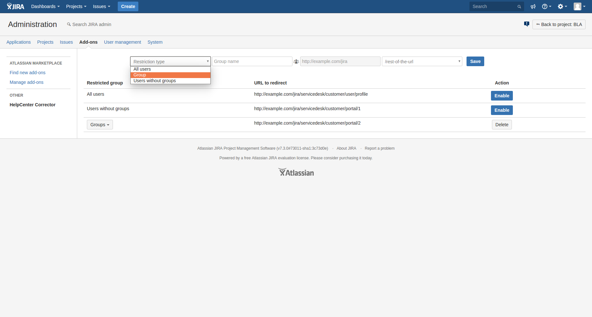

The HelpCenter Corrector plugin is designed to restrict an access to a Jira Service Desk HelpCenter.
There are three types of restrictions: for all users at once, per group and for users without group.
Plugin settings page can be found at “Other” section of “Addons” page.
To restrict access to the HelpCenter for all users do the following:
To disable “All users” restriction press “Disable” button.
After that all HelpCenter links in ServiceDesk will be hidden from any user. If the user tries access HelpCenter using direct link, he will be redirected to the URL that you have specified.
The restriction for users without groups can be configured in the same way as restrictions for all users.
Selecting restriction type
To set up group restriction do the following:
After these steps all HelpCenter links in ServiceDesk will be hidden from any user that belongs to a group you have specified. If the user tries access HelpCenter using direct link, he will be redirected to the URL that you provided.
The steps for editing are the same as for adding - value will be updated.
Dropdown list with restricted groups